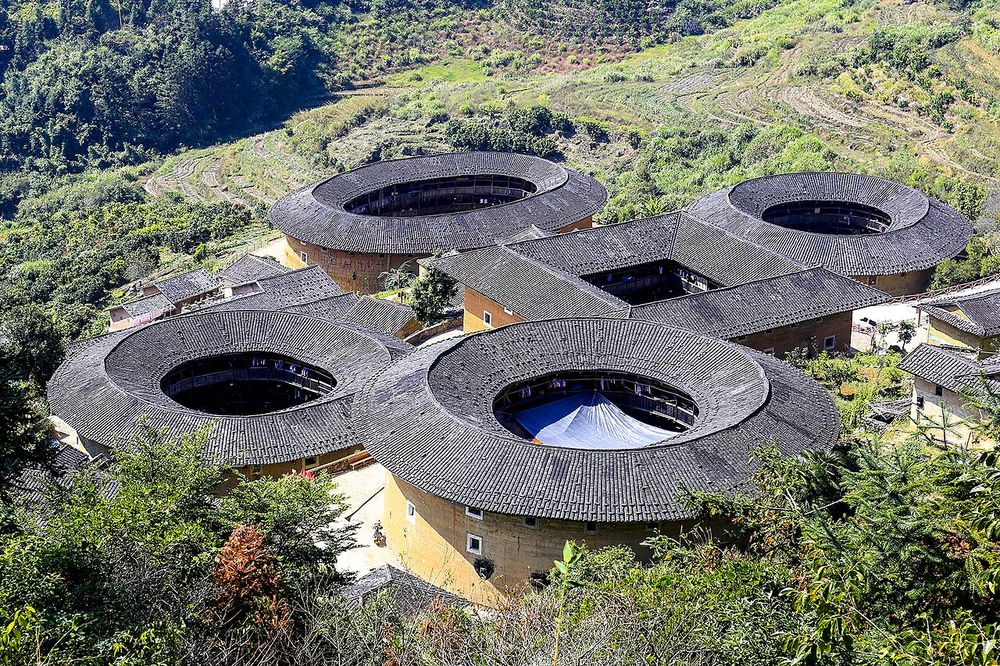
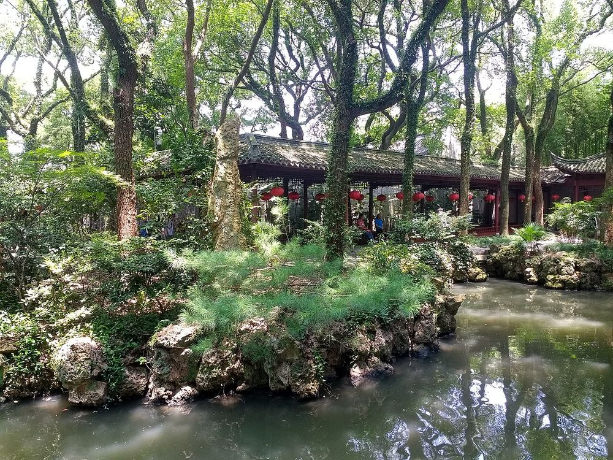
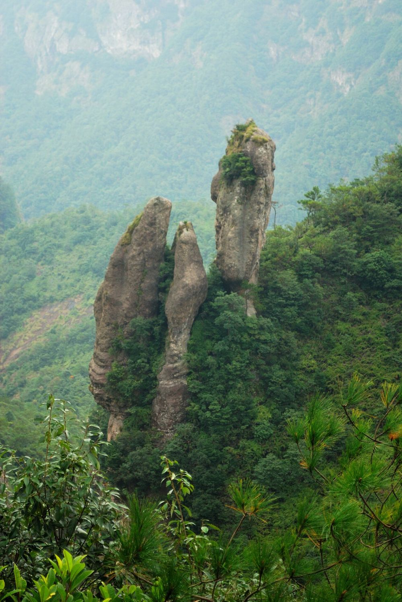
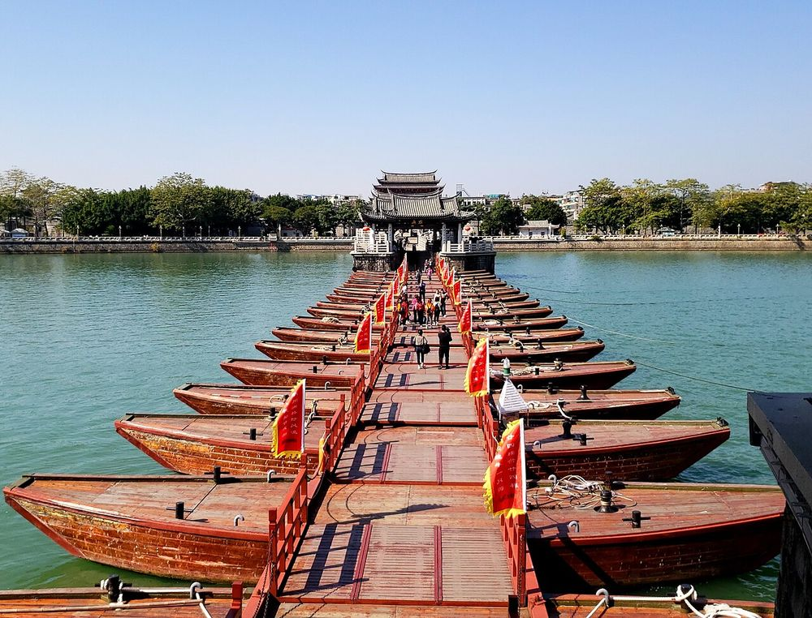

Shanghai to Guangzhou Coast Road Trip
Three weeks by car, one way down China’s south-east coast: Ningbo’s libraries and Yandang’s peaks, the seafood ports of Wenzhou, Fuzhou and Xiamen, Mazu’s island and the Hakka tulou, three unhurried nights in Chaoshan, then Shenzhen and the dim sum of Guangzhou.
Researched November 2026 for late May to mid June 2027. Hours, prices, ferry and booking rules change, so check before you go. Drive distances and times are estimates; confirm in Amap.

Why this coast road
The whole south-east coast in one unhurried drive, with no road driven twice and no leg much over two and a half hours: treaty-port Ningbo, the peaks of Yandang, Fuzhou’s old lanes, Mazu’s home island, Gulangyu, a night beside the UNESCO tulou, three nights in Chaozhou for the Teochew heartland, and Guangzhou to finish. A different seafood and snack tradition almost every day.
Late May to mid June: the wet season along the whole coast. Zhejiang’s plum rain usually starts in early to mid June, Fujian’s rainy season runs from mid May to late June, and Guangdong’s "dragon-boat water" rains are at their heaviest. Highs about 27–30°C in Zhejiang and 30–33°C further south, very humid. Typhoons are uncommon before late June but possible, and they stop the island ferries. Dragon Boat Festival is a single day off on Wed 9 June 2027: races on the Puxia River in Fuzhou, on the Han River streams around Chaozhou and village boat gatherings in Guangzhou (Liede, Chebei); dates are announced in late May.
Best time to go: late October to mid November is best: the driest weeks of the year, about 24–26°C by day, ferries mostly running and Chaoshan mud crabs in season; a late typhoon is rare but possible, so check the forecast a few days ahead. March to mid-April is a good second, when oysters are at their best, though spring sea fog can stop ferries. Late May to mid June is the wettest stretch, with the heavy dragon-boat rains. Avoid July–September (typhoons, humid heat), National Day week, Chinese New Year crowds and, for the Meizhou island ferry, the winter gales from late November to February.
The route: Shanghai → Ningbo → Linhai → Yandang Mountain → Wenzhou → Xiapu → Fuzhou → Meizhou Island → Putian → Xiamen → Nanjing County tulou → Shantou → Chaozhou → Shanwei → Shenzhen → Guangzhou, then fly home. 21 days one way, about 2,070 km of route (about 2,900 km with sightseeing), drives of up to about 2¾ hours, and three nights each in Xiamen, Chaozhou and Guangzhou.
Highlights
- Tianyi Pavilion, China’s oldest private library, and Wang Shu’s Ningbo Museum
- Yandang Mountain’s peaks by night and the Dalongqiu waterfall
- Fuzhou’s Three Lanes and Seven Alleys, with fotiaoqiang where it was invented
- Meizhou Island, home of the sea goddess Mazu, and Gulangyu’s colonial villas
- A night beside the Hakka tulou of Tianluokeng and Yunshuiyao (UNESCO)
- Chaozhou’s old town, Guangji Bridge, gongfu tea and Chaoshan beef hotpot; the qiaopi letters and overseas-Chinese history of Shantou
- Guangzhou dim sum, roast goose and the Chen Clan Ancestral Hall
Good to know
- Pick the start day so no Monday falls on a museum day: start on a Monday or a Saturday. The Ningbo, Wenzhou, Fujian, Xiamen overseas-Chinese, Shantou and Guangdong museums close on Mondays.
- Senior concessions are common (often half price at 60–69 and free at 70+), but many written rules ask for a Chinese ID card. Bring passports and ask; budget full price. Check travel insurance age limits.
- Several sights have steps or slopes (Baoguo Temple, the Linhai wall, Gulangyu, the Mazu temple, the tulou, Chen Cihong’s mansion). Easier options are on the day cards; a lightweight folding wheelchair fits the boot of a large MPV and saves relying on site loans.
- Book ahead with passports: Gulangyu ferry (online only, about 15 days ahead), Meizhou ferry (at the Wenjia pier window with passports), Nanputuo Temple (up to 4 days), Guangdong Museum (up to 7 days), Nanyue tomb chamber (the day before). Hotels can often help with ferry bookings.
- The ferries to Meizhou and Gulangyu stop in strong wind and typhoons: check the night before and keep Xiamen’s third day as the swap day.
- One-way hire: the drop-off fee is the big unknown (from nothing at some firms to nearly CNY 5,000). Get a written quote for the exact Shanghai pickup and Guangzhou drop-off.
- Many passports can now visit China visa-free for up to 30 days; check the rule for yours. Hotels register foreign guests at check-in.
- Do sights in the morning and after 16:00; rest or drive in the midday heat and afternoon showers.
Two ways to do it
💰 Best value
- Stay: the value pick in each city, 4-star or a platform-rated equivalent (see Where to stay).
- Eat: local specialities at well-rated everyday places.
- About CNY 12,290–17,070 per person for 21 days, including the car, excluding travel to the start and home.
✨ Best experience
- Stay: riverside Shangri-La hotels in Ningbo, Wenzhou and Fuzhou, the historic Lujiang Harbourview facing Gulangyu, the Crowne Plaza by the Han River in Chaozhou and the White Swan on Shamian Island.
- Eat: a Xin Rong Ji seafood lunch in Linhai, fotiaoqiang at Juchunyuan in Fuzhou, top-end Teochew seafood at Donghai in Shantou, and crisp roast goose at Bingsheng Mansion in Guangzhou.
- About CNY 17,420–24,750 per person.
Same route and days for both; only hotels and meals change.
Route map
● numbered: overnight stops in order ● stop on a drive day (lunch or sight). ● day trip from the base (dashed). Tap a point for its days. Lines follow roads from OpenStreetMap routing and are approximate.
Itinerary: 21 days, 20 nights
Each driving day is either one drive (leave early, arrive for a late lunch, then sightseeing only) or two drives with a lunch stop in between. Short hops to sights are not counted.
Morning
🚗 Shanghai → Ningbo · 213 km · 2h35
Collect the car in Shanghai and leave about 9:00, over the Hangzhou Bay Bridge.
Lunch
Late lunch in Ningbo: tangyuan and snacks at Gangyagou on Tianyi Square, or classic Ningbo cooking at Zhuangyuan Lou.
Afternoon
Tianyi Pavilion, China’s oldest private library, and Moon Lake next door (on a Monday the pavilion opens only from 13:30). Old Bund in the evening. The pavilion is flat but has high door thresholds; there are benches in the courtyards.
Morning
Ningbo Museum, Wang Shu’s building of reclaimed brick and tile (free, timed booking; ⚠️ closed Mondays). Lifts and air-conditioning: a good rainy-day choice.
Lunch
Lunch: Zhuangyuan Lou (croaker soup, braised eel) or homely Ningbo dishes in Tianyuan Lane.
Afternoon
A slow day. Baoguo Temple’s main hall (1013) is one of the oldest wooden buildings in south China; it sits up several flights of steps, so the older or less steady can stop at the lower halls. Or rest, then dinner of Ninghai seafood.
Morning
🚗 Ningbo → Linhai · 137 km · 1h40
Leave about 9:00.
Lunch
Linhai: lunch on Ziyang Street (Taizhou home cooking at Baitaqiao, mai xia noodles, filled flatbreads). Then the Taizhou Fu city wall, riverside section only: the hill section is long, steep stairs, so the older or less steady can stroll the flat 1 km of Ziyang Street instead.
Afternoon
🚗 Linhai → Yandang Mountain · 90 km · 1h10
Check in, early dinner, then the Lingfeng night view: the peaks turn into silhouettes after dark. About 1 km of mostly flat but dark, uneven path; bring torches and skip Guanyin Cave, which is hundreds of steps.
⚡ Charge overnight at the previous hotel or before setting off (about 273 km since the last charge)
Morning
🚗 Yandang Mountain → Wenzhou · 80 km · 1h
Dalongqiu waterfall at opening (about 190 m, best after rain): a gentle, mostly level walk of about 1 km, the best Yandang sight for older visitors. Leave about 11:30.
Lunch
Late lunch in Wenzhou: Changren wontons by Wuma Street, with deng zhan gao and fish balls from the stalls nearby.
Afternoon
Wuma Street and Chanjie, the flat Republican-era old quarter. Dinner of Ou-style seafood.
⚡ Charge this evening at the hotel (about 327 km since the last charge)
Morning
Either the Nanxi River villages (Furong and Cangpo, 47 min each way; flat but cobbled, so drive between them) or the Wenzhou Museum (⚠️ closed Mondays).
Lunch
Lunch in Yantou village, or a snack crawl on Wuma Street.
Afternoon
Back by about 15:00 and rest. Late afternoon to dusk on Jiangxin Islet: a short ferry (a step down into the boat), then flat garden paths and the twin pagodas lit at night; skip climbing them. The Shuomen ancient port park, a Song–Yuan Maritime Silk Road site, is on the bank opposite.
Morning
🚗 Wenzhou → Xiapu · 167 km · 2h
Leave about 8:30 into Fujian. This is the longest driving day (about 4 hours at the wheel in all, more in rain): stop at a service area on each leg and keep Xiapu short.
Lunch
Xiapu: seafood lunch at the Haowanjia market stalls (crushed conch, seaweed oyster soup, steamed croaker); have the fish weighed and priced before cooking. Then 30–45 minutes at a Beiqi mudflat viewpoint you can drive to (check the tide; skip any steep path).
Afternoon
🚗 Xiapu → Fuzhou · 152 km · 1h50
About 3h50 of driving in all, split by lunch. Arrive Fuzhou late afternoon and rest.
⚡ Charge at the lunch stop (about 337 km since the last charge)
Morning
Pick two of four, not all: Three Lanes and Seven Alleys (walk Nanhou Street and one or two houses; old houses have raised thresholds) with the Lin Zexu Memorial; or the Fujian Museum (⚠️ closed Mondays; bring passports).
Lunch
Lunch at Anthai Lou in Sanfang: fotiaoqiang, lychee pork, fish balls. Go early, before the tour groups.
Afternoon
Gushan: cable car up and the scenic shuttle down from Yongquan Temple (do not attempt the 2,000-odd stone steps); or the China Shipping Culture Museum at Mawei (⚠️ closed Mondays, book online). Fotiaoqiang dinner at Juchunyuan, or an easy hotel restaurant.
Morning
🚗 Fuzhou → Wenjia pier · 128 km · 1h35
Leave about 8:00. Park at Wenjia pier (the ferry takes no outside cars) and cross to Meizhou Island, 15–20 min, CNY 125 with island entry. Foreign passports buy at the Wenjia pier ticket window (the WeChat booking needs a Chinese ID card), so allow time to queue. Sailings stop in strong wind: check the night before.
Lunch
Lunch on Meizhou Island: Mazu noodles, steamed small seafood, braised fish with tofu.
Afternoon
🚗 Wenjia pier → Putian · 45 km · 40 min
The Mazu Ancestral Temple by island car (about CNY 190 a car, up to 12 people; the island is too big to walk). The temple climbs the hill in long flights of stairs: the older or less steady can see the main hall and lower courtyards while others climb to the statue. Ferry back about 15:30. Dinner in Putian: red-mushroom lor mee, braised tofu, Xinghua rice noodles.
⚡ Charge at the lunch stop (about 340 km since the last charge)
Morning
🚗 Putian → Xiamen · 167 km · 2h
Leave about 9:30.
Lunch
Late lunch on Zhongshan Road: live seafood at Jin Jia Gang, or shacha noodles at Dazhong.
Afternoon
Zhongshan Road (level; drop the older travellers at the Lujiang Road end), then Shapowei and the Art West Zone, with a short level boardwalk to the Yanwu Bridge platform looking across to Gulangyu.
Morning
Gulangyu by ferry from Dongdu terminal, about 9:00–10:00, landing at Sanqiutian (CNY 35 return). Tickets are real-name and sold only online (the "屿见厦门" mini-program, about 15 days ahead from 9:00; resellers such as Klook take passports), so book all passports the day sales open. The island has no cars and many slopes: take the electric shuttle loop if it is running (about CNY 50), then Shuzhuang Garden by the sea and Longtou Road. Skip Sunlight Rock, which is steep steps all the way.
Lunch
Lunch on Gulangyu at Na Sichu in a red-brick villa (mild steamed fish and tofu), or back on the mainland.
Afternoon
Back before the worst of the heat and rest. Late afternoon at Nanputuo Temple (free real-name booking up to 4 days ahead): the halls rise in terraces, so stop at the main halls and skip the climb behind.
Morning
Jimei School Village (18 km, 20 min): Ao Yuan and the Chen Kah Kee Memorial Museum on the level waterfront (⚠️ the museum closes on Mondays). Or the Overseas Chinese Museum in town (⚠️ closed Mondays; passport). Or simply rest and do laundry.
Lunch
Lunch on Huandao Road at Linjia Minnan Cuisine (No. 308): chicken-broth mee sua, ginger duck, oyster omelette. Queues form soon after opening.
Afternoon
Rest through the afternoon heat, then drive Huandao Road at sunset rather than walk it. Seafood dinner at Shuyou on Bailuzhou.
Morning
🚗 Xiamen → Tianluokeng · 137 km · 1h50
Leave about 9:00. The Tianluokeng cluster ("four dishes and a soup", UNESCO) from the hillside viewing platform. The path down into the cluster is steep with steps: the older or less steady can stay at the top platform.
Lunch
Late lunch near Taxia or Yunshuiyao: Hakka home cooking (salt-baked chicken, preserved-vegetable pork, river fish).
Afternoon
Taxia’s level riverside lane and ancestral hall (10 min), then Yunshuiyao (22 min): giant banyans, Huaiyuan Lou and Hegui Lou. Ground floors only; upper galleries are steep wooden stairs. Arrive before dark: the last roads are winding mountain roads.
⚡ Charge overnight at the previous hotel or before setting off (about 312 km since the last charge)
Morning
🚗 Yunshuiyao → Shantou · 220 km · 2h40
An early walk in Yunshuiyao, then leave about 9:30.
Lunch
Shantou: late lunch of Chaoshan fresh-beef hotpot at Fuhecheng or Bahe Li.
Afternoon
🚗 Shantou → Chaozhou · 42 km · 40 min
Small Park old town, with its 1920s–30s arcaded qilou (flat; park at the edge). The Qiaopi Museum holds 90,000+ remittance letters sent home by emigrants (⚠️ hours changed in 2026 and it may close on Mondays: check), and the Port-Opening Culture Exhibition Hall is about 100 m away. Then on to Chaozhou; dinner at Chaoshan Lou by the old town.
⚡ Charge overnight at the previous hotel or before setting off (about 177 km since the last charge)
Morning
Qianmei village in Chenghai (34 km, 30 min): the Chen Cihong residence, an early-1900s mansion of 500+ rooms built by an overseas merchant family, mixing Chinese and Western styles. Many raised thresholds and steps: the older or less steady can see just the main Shanju Shi block, with sitting breaks.
Lunch
Lunch in Shantou: braised goose at Chunmeili, or another beef hotpot.
Afternoon
The Chaoshan History and Culture Centre on the Dongbu waterfront (lifts): emigration to the Nanyang, qiaopi and intangible heritage under one roof (⚠️ its Overseas Chinese History Museum closes on Mondays). Or a visit to a clan ancestral hall in one of the old villages. Chaoshan is the home region of many overseas Chinese; overseas-Chinese federations (侨联) and volunteer groups help visitors trace ancestral villages, so contact them a month or two ahead. Back to Chaozhou about 45 min.
⚡ Charge this evening at the hotel (about 282 km since the last charge)
Morning
The old town early: Kaiyuan Temple (Tang dynasty, free, from 7:00), Paifang Street under its arches, then Guangji Bridge (opens about 10:00, CNY 20; check it is open, as it has closed for repairs). The bridge is long and its pontoon section swings open late afternoon; the older or less steady can view it from the Guangji Gate wall or the riverside promenade.
Lunch
Lunch in the old town: beef hotpot at Abin on Dongmen Street, or fish dumplings at Shibaqu.
Afternoon
Rest in the midday heat (a laundry stop). Then Longhu ancient village (27 km, 30 min; 1.5 km of flat lanes, drop off at the middle) or the gilt woodcarving of the Ji Lue Huang Ancestral Hall in town. Gongfu tea at a tea house; Teochew opera in the evening if a troupe is performing (ask the hotel). Braised goose for dinner.
Morning
🚗 Chaozhou → Shanwei · 195 km · 2h25
Leave about 9:30, with a service-area stop halfway.
Lunch
Late lunch in Shanwei: Cantonese roast goose and dim sum at the Galaxy Bay Hotel, or seafood at the DoubleTree; both have easy parking and charging.
Afternoon
A rest afternoon by the sea. Fengshan Mazu park late in the day: a 16.8 m stone Mazu above Pinqing Lake; drive to the upper car park if allowed and skip the climb.
⚡ Charge overnight at the previous hotel or before setting off (about 180 km since the last charge)
Morning
🚗 Shanwei → Shenzhen (Shekou) · 178 km · 2h10
Leave about 9:30.
Lunch
Late lunch in Nanshan: home-style Chaoshan dishes at Chaoxiang Sihai, or Cantonese dim sum.
Afternoon
Shekou Sea World’s flat waterfront and the old Minghua liner, then Design Society next door (lifts, air-conditioning, changing shows). OCT Loft if energy allows. Dinner by the water. (The Shenzhen Museum closes on Mondays.)
⚡ Charge overnight at the previous hotel or before setting off (about 215 km since the last charge)
Morning
🚗 Shenzhen → Guangzhou · 118 km · 1h35
Leave about 9:30.
Lunch
Late lunch near Yongqing Fang: Tao Tao Ju (since 1880) or Panxi’s garden teahouse, then double-skin milk at Nanxin.
Afternoon
Chen Clan Ancestral Hall, now the Guangdong Folk Art Museum (flat courtyards, door thresholds), then Yongqing Fang and the Enning Road qilou arcades.
Morning
Guangdong Museum (⚠️ closed Mondays; free real-name booking up to 7 days ahead, slots open at 22:00; show the passport used to book). Lifts throughout.
Lunch
Lunch opposite at Bingsheng Pinwei: black char siu and Cantonese classics.
Afternoon
Rest (a laundry stop), then Shamian Island late in the afternoon: flat, shady, car-free colonial streets. Roast goose for dinner.
⚡ Charge this evening at the hotel (about 346 km since the last charge)
Morning
Nanyue King Museum, the 2,000-year-old royal tomb: the jade burial suit is in the galleries above; the tomb chamber needs a separate timed slot booked the day before and goes down stairs and a slope, so the older or less steady can skip it. (Closed Mondays. The palace site is free with booking; the tomb costs CNY 10.)
Lunch
Dim sum lunch at Beiyuan, one of Guangzhou’s three great garden restaurants, nearby.
Afternoon
Rest, then the Canton Tower at dusk (lifts only; the indoor deck has been free for visitors aged 75+, so bring passports and ask), or a Pearl River night cruise boarding at the Canton Tower pier. Use the indoor seating rather than the top-deck stairs.
Morning
Morning dim sum, then return the car (an EV usually needs at least 90% of its pickup charge).
Lunch
Dim sum brunch at Nanyuan, a garden restaurant on Qianjin Road, before the airport.
Afternoon
Fly to Shanghai: about 2h20 in the air, CNY 570–900 one way (not in the budget). The flight is easier than the 6½-hour train with luggage; ask the airline for wheelchair help if needed.
Driving and charging
- Driving in China needs a Chinese licence. Visitors can get a temporary driving permit (up to 3 months) at a vehicle office with a passport and a translated licence; an International Driving Permit is not accepted.
- Second driver: on a long one-way trip, plan for two. Each extra driver needs their own Chinese licence or temporary permit (applied for in the city where the rental company is, so before setting off) and must be named on the rental contract, or the insurance may not cover them.
- Rental: get one written quote naming the exact model, the 21-day total, mileage cap and excess-km fee, deposit and pre-authorisation, insurance excess, second-driver fee, ETC toll settlement, charging card, any border-zone restrictions and the replacement-car rule. Some companies price 7–27 days as weekly rates, not monthly.
- Phone and payment: get a Chinese +86 SIM with your passport on arrival (most charging and booking apps want a Chinese number) and keep your own number for bank codes. Set up Alipay and WeChat Pay with a foreign card before travel and test a small payment; WeChat Pay foreign-card limits start at CNY 3,000 per payment and 15,000 a year until you verify your identity. Carry a second card and some cash.
- Li Auto superchargers: single-gun 5C posts serve only Li Auto and approved high-voltage cars; dual-gun and 2C posts take any national-standard EV, paid by Alipay or WeChat scan.
- Hotels may not refuse foreign guests for lacking a foreign-guest licence (national rule, 2024), but small-town front desks vary: get written confirmation for six passports, three rooms, parking for a large MPV and on-site charging.
- Car: a large 6-seat electric MPV such as the Li Auto MEGA, ZEEKR 009 or DENZA D9. The MEGA and 009 are fully electric with long range and very fast charging (the MEGA has its own Li Auto supercharger network on main expressways). The D9 also comes as a plug-in hybrid (DM-i) with a fuel backup, the safest choice for the remote stretches. Plan charging stops with the car's navigation or Amap's charger layer, and arrive at each hotel with enough charge for the next morning.
- Charging is easy on the coast expressways: about 99% of China’s expressway service areas had chargers by 2026. Service-area prices are typically CNY 1.6–2.0 per kWh, and queues form on holiday afternoons, so charge in cities or at hotels overnight where you can.
- Hotels on this route that list on-site chargers include the Overseas Chinese Hotel and Shangri-La in Wenzhou, Shangri-La Fuzhou, Holiday Inn Putian Xiuyu, City Hotel Xiamen, Lingbo Grand Skylight at the tulou, Manxin Hotel in Chaozhou, Yating in Shenzhen and the White Swan; confirm when booking.
- The Yandang and tulou approaches are winding mountain roads: arrive in daylight. The DENZA D9 DM-i’s fuel backup removes any range worry there.
- One-way hire: 1hai advertises no one-way fee (but its one-way base rates can be higher); Car Inc charges about CNY 500–4,827 by distance and car class. Price the exact Shanghai pickup and Guangzhou drop-off in each app, and return an EV with at least 90% of its pickup charge or pay a charging fee.
- Meizhou Island: outside cars cannot use the ferry. Park at Wenjia pier (about CNY 2 an hour, CNY 30 per 24 hours, open lot).
- Tolls: about CNY 0.45 per km on most expressways and 0.60 on Guangdong’s six-lane ones; the Hangzhou Bay Bridge is about CNY 80. Rental cars usually carry ETC and bill tolls afterwards. Dragon Boat is not a toll-free holiday.
- Tolls: CNY 850–1,050 (ETC)
- Total driving: about 2,070 km.
Transport costs for the car Estimates. Tolls: expressway share of the route at CNY 0.40–0.60 per km for a passenger car. Charging: 22–26 kWh per 100 km for a large electric MPV at CNY 1.2–1.8 per kWh on public fast chargers (cheaper at hotels or off-peak). Car hire is separate.
| Whole car | Per person (6) | |
|---|---|---|
| Distance | 2,880 km (route 2,070 + sightseeing 810); expressway about 1,760 km | |
| Highway tolls | CNY 700–1,060 | CNY 120–180 |
| Charging (630–750 kWh) | CNY 760–1,350 | CNY 130–220 |
| Total | CNY 1,460–2,400 | CNY 240–400 |
| One-way car hire with drop-off fee (estimate) | CNY 11,000–23,800 | CNY 1,830–3,970 |
| If you rent the DENZA D9 DM-i and drive on fuel (6.6–7.1 L/100 km, CNY 8/L assumed) | CNY 1,520–1,640 | CNY 250–270 |
Conservative case for a fully loaded MPV: 24–30 kWh per 100 km, i.e. 690–860 kWh, CNY 830–1,550 for the car. Pay tolls by ETC or at staffed lanes; keep a bank card or cash as backup.
⚡ Charging plan Plans a top-up at least every 350 km and arrival with 20–30% left: a full six-seat MPV at expressway speed with air-conditioning falls well short of its rated range. Charge at lunch stops (30–45 min on a fast charger) or near the hotel in the evening, and check each station in Amap or the operator app on the day; do not rely on a hotel listing that says it has chargers. 350 km is the point to re-check, not a promise of a working charger: pick a backup station from a different operator for each stop, especially on remote stretches.
| Day | Where | km since last charge |
|---|---|---|
| 3 | Ningbo (overnight or morning) | 273 km |
| 4 | Wenzhou (evening) | 327 km |
| 6 | Xiapu (lunch stop) | 337 km |
| 8 | Lunch on Meizhou Island (lunch stop) | 340 km |
| 12 | Xiamen (overnight or morning) | 312 km |
| 13 | Yunshuiyao (tulou) (overnight or morning) | 177 km |
| 14 | Chaozhou (evening) | 282 km |
| 16 | Chaozhou (overnight or morning) | 180 km |
| 17 | Shanwei (overnight or morning) | 215 km |
| 19 | Guangzhou (evening) | 346 km |
Top sights








Ningbo
- Tianyi Pavilion Museum: China’s oldest surviving private library (1560s) with its gardens; flat, but high door thresholds. 08:30–17:30 (Mon 13:30–17:30) · closed Mon a.m. (周一上午) · 30 CNY · Timed slots on Qunar or Ctrip; half price at 60–69
- Old Bund and Tianyi Square: The former treaty-port waterfront at Sanjiangkou, with 19th-century buildings; best in the evening. 24 h · free
- Baoguo Temple: Main hall of 1013, one of the oldest wooden buildings in south China; on a hillside with several flights of steps. 08:00–17:00 · 20 CNY · Gate or online (CNY 18 booked a day ahead)
Linhai
- Taizhou Fu city wall and Ziyang Street: The "Great Wall of the South"; the hill section is steep stairs, the riverside section and the 1 km Ziyang Street are flat. ? · 55–60 CNY · Tickets usable at once on Qunar; Ziyang Street free
Yandang Mountain
- Lingfeng night view: After dark the Palms-together and Twin Bamboo Shoot peaks become silhouettes; about 1 km of dark, uneven path. ~18:30–21:30 · 45 CNY · Separate from the day ticket; combined tickets exist
- Dalongqiu waterfall: One of China’s tallest single-drop falls, about 190 m; a gentle, mostly level 1 km walk, strongest after rain. 06:30–17:00 · 50 CNY · Gate or Qunar; concessions at 60–69, free at 70+ (Chinese ID may be asked)
Wenzhou
- Jiangxin Islet: River island with Tang and Song twin pagodas and the Wen Tianxiang shrine; flat garden paths, lit at night. 08:00–21:00 · 30 CNY · Price includes the return ferry
- Shuomen Ancient Port Site Park: Song–Yuan Maritime Silk Road port remains, a top archaeological find of 2022; the first phase opened in 2026. Open park, no booking. 24 h · free
- Wuma Street and Chanjie: Republican-era pedestrian streets at the heart of Wenzhou’s snack scene; flat. 24 h · free
- Nanxi River villages: Furong and Cangpo, Song-era planned villages and the arcaded Lishui Old Street; flat but cobbled. 08:00–17:00 · 36 CNY · Combined ticket for the three; concession for 70+
Xiapu
- Xiapu mudflats (Beiqi): The famous bamboo-pole and seaweed-farm mudflats; best at sunrise or sunset and at the right tide. Some viewpoints are up steep paths. 24 h · free · Free; check a tide table
Fuzhou
- Three Lanes and Seven Alleys: Car-free Ming–Qing quarter of courtyard houses; walk Nanhou Street and one or two houses (combined house tickets CNY 55–65 are optional). 24 h · free
- Lin Zexu Memorial: Memorial to the official who fought the opium trade; mostly flat courtyards. 08:30–18:00 · free
- Gushan and Yongquan Temple: Mountain temple above the city; take the cable car up and the shuttle down instead of the 2,000-odd steps. 06:30–17:30 · 40 CNY · Temple ticket on site; cable car extra
Meizhou Island
- Mazu Ancestral Temple: The mother temple of the sea goddess Mazu, climbing the hill in terraces to a 14 m statue. ~07:30–17:30 · Island entry is in the CNY 125 ferry ticket, bought at the Wenjia pier window with passports
Xiamen
- Gulangyu UNESCO: Car-free island of colonial villas and gardens; no gate fee, with Shuzhuang Garden by the sea (from CNY 30) the easiest sight. ~07:10–18:40 · 30 CNY · Real-name ferry tickets online only ("屿见厦门"), about 15 days ahead
- Nanputuo Temple: Terraced Minnan temple below Wulao Peak; next to Xiamen University. ~08:00–17:30 · free · Free real-name booking, up to 4 days ahead
- Zhongshan Road, Shapowei and the Art West Zone: Arcaded shopping street and the old fishing harbour turned art district, with a level boardwalk to the Yanwu Bridge platform. 10:00–22:00 · free
- Jimei School Village: The schools, Ao Yuan and memorial built by the overseas-Chinese philanthropist Chen Kah Kee (Tan Kah Kee), on a level waterfront. 09:00–17:00 · closed Mon (周一) · free · Jiageng Park free
Nanjing County tulou
- Tianluokeng tulou cluster UNESCO: The "four dishes and a soup" cluster of round and square earth houses, best seen from the hillside platform; the path down is steep. 08:30–17:30 · 90 CNY · Gate; 2027 price to confirm
- Yunshuiyao, Huaiyuan Lou and Hegui Lou UNESCO: Riverside old town of giant banyans with two fine tulou; the most level tulou area. 08:30–17:30 · 90 CNY · Gate; half price at 60–69, free at 70+ as written (Chinese ID may be asked)
- Hongkeng (Yongding), optional UNESCO: Zhencheng Lou, the "Prince of Tulou", in a level streamside village, 28 min from Yunshuiyao. 06:30–21:00 · 90 CNY · Ticket valid more than one day once stamped
Shantou
- Small Park old town: 1920s–30s arcaded qilou streets of the old treaty port; the core is flat. 24 h · free
- Qiaopi Museum: Over 90,000 qiaopi, the letters and remittances emigrants sent home: the story of the overseas Chinese of Chaoshan. ? · closed Mon? (周一) · Likely free
- Chaoshan History and Culture Centre: Modern halls on emigration to the Nanyang, qiaopi and intangible heritage, including the Chaoshan Overseas Chinese History Museum (from CNY 48); lifts. 09:00–17:00 · closed Mon (周一) · 48 CNY · The online booking form asks for a Chinese ID number: phone ahead or ask the hotel how to book with passports
- Chen Cihong former residence: A vast early-1900s mansion of 500+ rooms in Qianmei village, Chenghai, built by an overseas merchant family; many thresholds and steps. 08:30–17:30 · 40 CNY · Price is an estimate; check on Ctrip
Chaozhou
- Guangji Bridge: One of China’s four great ancient bridges, with a pontoon section of 18 boats that swings open late in the day. 10:00–17:30 · 20 CNY · Real-name ticket on site or online; has closed for repairs, so check
- Paifang Street and Guangji Gate: About 1.9 km of old shopfronts under 23 stone memorial arches; flat. 24 h · free
- Kaiyuan Temple: Tang-dynasty temple in the old town; flat, with threshold steps between halls. 07:00–~17:00 · free
- Hanwen Gong Temple: Shrine to the Tang scholar Han Yu across the river; steep stone stairs up to the main hall. 08:30– · free · Free, real-name reservation
- Longhu ancient village: A long main street of Song–Qing ancestral halls and mansions, 30 min from town; about 1.5 km of flat lanes. 24 h · free · Free
Shanwei
- Fengshan Mazu park: A 16.8 m stone Mazu on a hill above Pinqing Lake. Many steps up: the older or less steady can wait at the plaza at the foot. 08:00–18:00 · free
Shenzhen
- Shekou Sea World and Design Society: A flat waterfront round the old Minghua liner, and a design museum with V&A-linked galleries next door (some shows charge). 10:00–19:00 (Sat–Sun 10:00–21:00) · free
- OCT Loft: Old factories turned into a shady creative park of galleries and cafés. 24 h · free
Guangzhou
- Chen Clan Ancestral Hall: The great 1890s clan academy, now the Guangdong Folk Art Museum, famous for its carving; flat courtyards. 09:00–18:00 · closed Tuesdays (周二) · 10 CNY · WeChat account or QR code on site
- Shamian Island: Former concession island of colonial buildings under banyans; flat, shady and car-free. 24 h · free
- Yongqing Fang and Enning Road: Restored Xiguan lanes and qilou arcades; busy at weekends. 24 h · free
- Canton Tower: The 600 m tower; the indoor deck has been free for visitors aged 75+ (bring passports and ask). 09:30–22:30 · 89 CNY · From CNY 89 on group-buy sites
- Pearl River night cruise: Board at the Canton Tower pier; indoor seating, avoid the top-deck stairs. ~18:30–23:40 · 88–110 CNY · Basic boats; open top deck and buffet cruises cost more
Exhibitions
- All museums on the route: No exhibitions for 2027 announced yet Checked November 2026: none of the museums on this route has published its 2027 programme. Chinese museums usually announce shows one to three months ahead; check their WeChat accounts in April and May.
- Design Society, Shenzhen: Changing design shows in the V&A-linked gallery Nothing announced for 2027; some shows charge.
- Ningbo Museum: Special exhibitions on the ground floor 2026 shows included Liangzhu jades and Qing export art; 2027 not yet announced. Some special shows charge.
- Qiaopi Museum, Shantou: Permanent qiaopi collection Over 90,000 letters; ask whether letters can be searched by surname or village.
- Most museums publish summer 2027 shows only a few weeks ahead. This section will be updated closer to the time.
Museums
| Museum | Hours | Closed | Entry |
|---|---|---|---|
| Ningbo Museum Ningbo | 09:00–17:00 (Sat–Sun 09:00–21:00) | Mon (周一) | 0 Free timed booking on WeChat or the website |
| Wenzhou Museum Wenzhou | 09:00–17:00 | Mon (周一) | 0 No booking for individuals |
| Fujian Museum Fuzhou | 09:00–17:00 | Mon (周一) | 0 Booking rules conflict: book on WeChat if possible; bring passports |
| China Shipping Culture Museum Fuzhou (Mawei) | 09:00–17:00 | Mon (周一) | 0 Book online ahead; daily cap about 2,000 |
| Overseas Chinese Museum Xiamen | 09:00–18:00 | Mon (周一) | 0 No booking found; passport needed |
| Chen Kah Kee Memorial Museum Xiamen (Jimei) | 09:00–17:00 | Mon (周一) | 0 |
| Qiaopi Museum (Shantou Archives) Shantou | ? | Mon? (周一) | 0? Likely free |
| Port-Opening Culture Exhibition Hall Shantou | ? | Mon? (周一) | 0? |
| Chaoshan Overseas Chinese History Museum Shantou | 09:00–17:00 | Mon (周一) | 48 |
| Shantou Museum Shantou | ? | Mon (周一) | 0 |
| Yitaoxuan Chaozhou Kiln Museum Chaozhou | ? | Call ahead | |
| Shenzhen Museum Shenzhen | 10:00–18:00 | Mon (周一) | 0 Check the WeChat account |
| Guangdong Museum Guangzhou | 09:00–17:00 | Mon (周一) | 0 Real-name booking on WeChat up to 7 days ahead, slots open at 22:00; show the booking passport |
| Nanyue King Museum Guangzhou | 09:00–17:30 | Mondays (周一) | 10 Palace site free with WeChat booking; tomb CNY 10; the lower tomb chamber needs a separate slot booked ahead |
Most Chinese museums close on Mondays and need a free real-name booking with your passport.
Where to eat
Lunch and dinner options for every stop. Badges show the rating and review count from the source named, mostly Ctrip / Trip.com (out of 5; 4.5+ with 150+ reviews is our bar). Dianping scores did not appear in search listings, and Dianping blocks automated access, so they are not used. Places below the bar are kept only where nothing better is on the route, and are marked. Read November 2026; prices are per person.
Ningbo
- Lunch: Gangyagou (Tianyi Square) Trip.com 4.6 · 1274 reviews: Ningbo tangyuan, dumplings and snacks; a quick lunch. CNY 30–50
- Lunch: Zhuangyuan Lou (Heyi Road) Ctrip 4.6 · 514 reviews: Classic Ningbo cooking since the 18th century: yellow croaker soup with pickled greens, braised eel. CNY 124
- Dinner: Ninghai Shifu (Tianyi Pavilion flagship) Trip.com 4.8 · 151 reviews: Ninghai-style seafood. CNY 197 · 11:00–13:30, 17:00–20:30
- Dinner: Shipu Fandian (Tianyi branch) Trip.com 4.6 · 192 reviews: Shipu fishing-port seafood chosen from live tanks.
Linhai
- Lunch: Baitaqiao Fandian (by Ziyang Street) Ctrip 5.0 · 43 reviews (below our 4.5 bar or few reviews): Taizhou home cooking; mai xia noodles in seafood broth, egg-white "sheep tail" puffs. CNY 69
- Lunch: Du Ji Mai Bing (Taizhoufu Road) Ctrip 5.0 · 104 reviews (below our 4.5 bar or few reviews): Filled flatbread, for a quick bite. CNY 21
- Lunch: Xin Rong Ji (Linhai original) Trip.com 4.9 · 14 reviews (below our 4.5 bar or few reviews): The Linhai original of the Michelin-starred group: Taizhou seafood, a splurge at about CNY 460–1,100 a head; reserve, 10 minutes’ drive from the old town.
Yandang Mountain
- Lunch: Taoyuan Nongzhuang (Nengren village, near Dalongqiu) (below our 4.5 bar or few reviews): Farm cooking: wild stream eel, small stream fish, river snails. CNY 30
- Dinner: Shejian shang de Yandang Trip.com 5.0 · 23 reviews (below our 4.5 bar or few reviews): Local Yandang and Jiangnan home cooking.
- Dinner: Haowangjiao Shifu Ctrip 4.9 (below our 4.5 bar or few reviews): Local fish and seafood. CNY 78
Wenzhou
- Lunch: Changren Wonton (Jiefang Street, by Wuma Street) Trip.com 4.8 · 310 reviews: The classic Wenzhou wonton; add fish balls and deng zhan gao from nearby stalls. CNY 24
- Lunch: Biantou Dengzhangao (Wuma Street) Trip.com 4.8 · 150 reviews: Deng zhan gao (fried radish-pork cakes), then rice-noodle soup next door. CNY 15–30
- Dinner: Xin Dongshan Seafood (Bailu Li) Ctrip 4.7 (below our 4.5 bar or few reviews): Ou-style seafood; order the fish-ball soup. CNY 151
- Dinner: A Wai Lou (South Station) Trip.com 4.7 · 42 reviews (below our 4.5 bar or few reviews): Long-established Wenzhou cuisine, good for a banquet table.
Xiapu
- Lunch: Xinmeiweiyuan Seafood (Haowanjia market) Ctrip 4.5 · 17 reviews (below our 4.5 bar or few reviews): Crushed conch, seaweed oyster soup, steamed large yellow croaker; catch bought fresh each morning. CNY 95
- Lunch: Xinjincheng seafood stall (same market) Ctrip 5.0 · 23 reviews (below our 4.5 bar or few reviews): Steamed spotted sea bass, squid fried with scallion; have fish weighed and priced first. CNY 121
Fuzhou
- Lunch: Anthai Lou (Sanfang, Jibi Lane 1) Ctrip 4.5 · 480 reviews: Fotiaoqiang (small portion about CNY 78), lychee pork, handmade fish balls, oyster omelette; go early. CNY 98
- Lunch: Lao Fuzhou (Doudong branch) Ctrip 4.6 · 77 reviews (below our 4.5 bar or few reviews): Fotiaoqiang, lychee pork, drunken ribs, fish balls. CNY 91
- Dinner: Fudi, InterContinental Fuzhou Ctrip 4.9 · 108 reviews (below our 4.5 bar or few reviews): Fotiaoqiang, clam in chicken broth, lychee pork; lift, air-conditioning, private rooms. CNY 141
- Dinner: Minyan 1984 (Yuehua Hotel, Sanfang) Ctrip 4.9 · 36 reviews (below our 4.5 bar or few reviews): Gutian duck pot, lychee pork, Min banquet dishes. CNY 141
- Dinner: Juchunyuan (below our 4.5 bar or few reviews): The home of fotiaoqiang, a national intangible-heritage recipe: about CNY 300–400 a pot; confirm the branch.
Meizhou Island and Putian
- Lunch: Island hotel restaurants (Haijing or Junya) (below our 4.5 bar or few reviews): Mazu noodles, steamed small seafood, braised fish with tofu (named in the Putian dining guide).
- Dinner: Lao Puxian (Yizhong main branch) Ctrip 4.7 · 31 reviews (below our 4.5 bar or few reviews): Red-mushroom lor mee, braised tofu, Xinghua fried rice noodles, lychee pork; free parking. CNY 89–120
- Dinner: Holiday Inn Xiuyu restaurant or Houhai Yucun (below our 4.5 bar or few reviews): Nanri abalone and wild sea fish; fisherman’s clay-stove rice (both in the Putian dining guide).
Xiamen
- Lunch: Jin Jia Gang Seafood (Zhongshan Road) Trip.com 4.9 · 826 reviews: Live seafood cooked to order, oyster omelette. CNY 90
- Lunch: Dazhong Shacha Noodles (since 1991) Trip.com 4.5 · 207 reviews: Shacha noodles. CNY 25–30
- Lunch: Na Sichu Red-brick Villa (Gulangyu, Anhai Road 59) Trip.com 5.0 · 252 reviews: Mild home dishes: steamed fish, tofu. CNY 55
- Lunch: Linjia Minnan Cuisine (Huandao Road 308) Trip.com 4.6 · 678 reviews: Chicken-broth mee sua, ginger duck, oyster omelette; seaside. CNY 70 · 11:00–21:30
- Dinner: Shuyou Seafood (Bailuzhou No. 1) Trip.com 4.6 · 186 reviews: Big, easy-access banquet seafood restaurant. CNY 100
- Dinner: TANGYAN 1988 (Zhongshan Road) Trip.com 5.0 (below our 4.5 bar or few reviews): Fujian and Minnan dishes.
Nanjing County tulou
- Lunch: Yunshuiyao Minyue Tucai Guan Ctrip 5.0 · 32 reviews (below our 4.5 bar or few reviews): Hakka home cooking: salt-baked chicken, preserved-vegetable pork, river fish. CNY 55
- Lunch: Yunshuiyao Nongjiaxuan Ctrip 4.7 · 9 reviews (below our 4.5 bar or few reviews): Farmhouse dishes, tofu and bamboo shoots. CNY 34
- Dinner: Lingbo Grand Skylight hotel restaurant (below our 4.5 bar or few reviews): The easy option: no driving after dark.
Shantou
- Lunch: Fuhecheng Beef Hotpot (Changping, Guoxin) Ctrip 4.7 · 190 reviews: Chaoshan fresh-beef hotpot, known for its beef balls. CNY 82
- Lunch: Bahe Li Haiji (flagship) Ctrip 4.6 · 293 reviews: The best-known Chaoshan beef hotpot chain. CNY 90
- Lunch: Chunmeili Braised Goose (Zhongshan Road) Ctrip 4.3 · 42 reviews (below our 4.5 bar or few reviews): Braised goose platter, goose liver. CNY 85
- Dinner: Donghai Restaurant (Changping Road 123) Ctrip 4.8 · 44 reviews (below our 4.5 bar or few reviews): Classic top-end Teochew seafood, a splurge at about CNY 890 a head.
Chaozhou
- Lunch: Abin Beef Hotpot (Dongmen Street 32–34) Ctrip 4.3 · 100 reviews (below our 4.5 bar or few reviews): Beef hotpot in the old town. CNY 80
- Lunch: Shibaqu Fish Dumplings Ctrip 4.4 · 25 reviews (below our 4.5 bar or few reviews): Fish dumplings and fish noodles; quick. CNY 25
- Dinner: Chaoshan Lou (Dongmen Street 22) Ctrip 4.7 · 320 reviews: Chaozhou cuisine, raw-marinated seafood, congee; 200 m from Guangji Bridge. CNY 79
- Dinner: Liu Bu Braised Goose (Shangxiping Street 245) Ctrip 4.8 · 20 reviews (below our 4.5 bar or few reviews): Braised goose (CNY 69), goose platter (CNY 130). CNY 67 · 09:00–22:00
- Dinner: Fengchun Seafood Ctrip 4.7 · 26 reviews (below our 4.5 bar or few reviews): Oyster omelette, steamed fish, clay-pot dishes. CNY 103
Shanwei
- Lunch: Zhenyue, Galaxy Bay Hotel Ctrip 4.8 · 9 reviews (below our 4.5 bar or few reviews): Roast goose and dim sum; easy parking and charging. CNY 98
- Dinner: Qingya, DoubleTree by Hilton Ctrip 4.4 · 18 reviews (below our 4.5 bar or few reviews): Cantonese seafood. CNY 151
Shenzhen
- Lunch: Chaoxiang Sihai (Nanshan Avenue) Ctrip 4.6 · 69 reviews (below our 4.5 bar or few reviews): Home-style Chaoshan dishes, oyster omelette. CNY 98
- Lunch: Fenghuang Lou (Huaqiangbei) Ctrip 4.6 · 316 reviews: Classic Cantonese dim sum. CNY 132
- Dinner: International Trade Centre revolving restaurant (49F) Ctrip 4.7 · 102 reviews (below our 4.5 bar or few reviews): Cantonese, high above Luohu, in the tower where the 1992 Southern Tour speech was given. CNY 119
Guangzhou
- Lunch: Nanyuan Restaurant (Qianjin Road) Ctrip 4.5 · 449 reviews: Garden restaurant; dim sum. CNY 98
- Lunch: Beiyuan Restaurant (Xiaobei Road) Ctrip 4.5 · 267 reviews: One of the three great garden restaurants; near the Nanyue King Museum. CNY 189
- Lunch: Bingsheng Pinwei (Zhujiang New Town) Ctrip 4.6 · 507 reviews: Black char siu; opposite the Guangdong Museum. CNY 129
- Lunch: Tao Tao Ju (Dishifu Road) Ctrip 4.2 · 683 reviews (below our 4.5 bar or few reviews): Teahouse since 1880, with a "century roast goose"; near Yongqing Fang. CNY 103
- Dinner: Cai Yue Xuan, Sheraton Guangzhou Ctrip 4.7 · 242 reviews: Good-value hotel Cantonese, roast goose. CNY 122
- Dinner: Bingsheng Mansion (Zhujiang New Town) Ctrip 4.6 · 383 reviews: Crisp roast goose; a splurge at about CNY 420 a head.
Shopping
- Tianyi Square and the Old Bund (Ningbo): Ningbo tangyuan and snacks, bars and cafés by the river. ~10:00–22:00
- Wuma Street (Wenzhou): Snacks (deng zhan gao, fish balls, tangyuan) and old shopfronts. 24 h
- Nanhou Street, Three Lanes and Seven Alleys (Fuzhou): Jasmine tea, bodiless lacquerware, Shoushan stone carving, fish balls and peanut soup. ~09:00–22:00
- Zhongshan Road (Xiamen): Peanut soup, mung-bean pastries, dried seafood and Minnan tea. 24 h
- Small Park old town (Shantou): Chaoshan snacks, beef balls and preserved olives to take home. ~08:30–21:00
- Paifang Street and the Fengxi ceramics district (Chaozhou): Phoenix Dancong tea, hand-thrown clay teapots, Chaozhou embroidery and old-style cakes; ask the hotel about a teapot-studio visit. ~09:00–22:00
- Yongqing Fang and Enning Road (Guangzhou): Cantonese crafts, copperware and desserts in the Xiguan lanes. ~10:00–22:00
Where to stay
Two picks per city: a value pick (4-star or a platform-rated equivalent; platform grades are not official star ratings) and a best-experience option. Hotels should not refuse foreign guests, but confirm in writing that they will register six foreign passports and have parking for a large MPV. Prices are CNY per room-night as observed in November 2026 for an early-June 2027 night, or the typical rate where none was listed yet.
| City | 💰 Value | ✨ Experience |
|---|---|---|
| Ningbo 2 night(s) | Wyndham Grand Plaza Royale Ningbo Booking.com /10, 264 reviews 8.9 CNY 587 · Walk to Moon Lake and Tianyi Pavilion; free parking. Ask about chargers (the Marriott on Heyi Road has them). | Shangri-La Ningbo Booking.com /10, 247 reviews 8.9 CNY 974 · On the river at the meeting of three rivers; wheelchair-accessible rooms with grab rails. |
| Yandang Mountain 1 night(s) | Yandangshan Villa Ctrip /5, 225 reviews 4.3 CNY ~520 · Estimated price. A long-established 4-star (refurbished 2018), about 20 minutes’ walk from the Lingfeng night view. Confirm in writing that it takes foreign passports. | Lingqiu Hotel Ctrip /5, 701 reviews 4.7 CNY 478–528 · Estimated price. Opened 2024; mountain-view rooms and a pool, 10–15 minutes from Lingfeng and Dalongqiu. Confirm foreign-passport check-in. Confirm in writing that it takes foreign passports: another hotel in the area says it does not. |
| Wenzhou 2 night(s) | Overseas Chinese Hotel Wenzhou Booking.com /10, 70 reviews 8.2 CNY 618 · Long-established; walk to Wuma Street and the Jiangxin ferry. Older building: ask about lifts. | Shangri-La Wenzhou Booking.com /10, 114 reviews 8.9 CNY 909 · Riverside, about 10 minutes’ drive to Wuma Street. |
| Fuzhou 2 night(s) | Mercure Fuzhou Downtown Trip.com /10, 4,405 reviews 9.6 CNY 390 · Excellent value; ask for a surface parking space for a large MPV. | Shangri-La Fuzhou Trip.com /10, 10,340 reviews 9.2 CNY 622 · 15 minutes’ walk to Sanfang, 3 minutes’ drive to the Fujian Museum; Michelin-starred Chinese restaurant. |
| Putian 1 night(s) | Holiday Inn Putian Xiuyu Trip.com /10, 1,355 reviews 9.7 CNY 407 · Closest comfortable hotel to the Meizhou ferry; its own restaurant means no driving after the island day. | Shangri-La Putian Trip.com /10, 1,677 reviews 9.4 CNY 1487 · In the city, near the lor mee and braised-tofu restaurants. |
| Xiamen 3 night(s) | City Hotel Xiamen Booking.com /10, 203 reviews 8.8 CNY 515 · State guesthouse in gardens, about 1.5 km from Zhongshan Road; wheelchair-accessible, grab rails. Gulangyu ferries leave from Dongdu, 6–7 km north. | Xiamen Lujiang Harbourview Hotel Trip.com /10, 3,956 reviews 9.6 CNY ~1,210 · Historic: Xiamen’s first high-rise, facing Gulangyu, with a rooftop restaurant. |
| Nanjing County tulou (Yunshuiyao) 1 night(s) | Lingbo Grand Skylight International Hotel Trip.com /10, 2,089 reviews 9.3 CNY ~900 · Estimated price. Opened 2023, with lifts and private bathrooms; accepts foreign guests. The inns inside the tulou have steep wooden stairs and often shared bathrooms. | Lingbo Grand Skylight International Hotel Trip.com /10, 2,089 reviews 9.3 CNY ~900 · Estimated price. The same hotel: the only comfortable choice with lifts. For character instead, Herongzhuang Inn at Taxia (Booking.com 9.6, about CNY 313) has private bathrooms; ask for ground-floor rooms. |
| Chaozhou 3 night(s) | Manxin Hotel, Chaozhou Ancient City Paifang Street Booking.com /10, 2 reviews (Ctrip 4.7/5) 9.5 CNY 676 · Walk to Paifang Street and Guangji Bridge; few Booking reviews, but Ctrip rates it well. | Crowne Plaza Chaozhou Riverside Booking.com /10, 102 reviews (Ctrip 4.6/5) 8.7 CNY 990 · River views of the old town and the bridge. |
| Shanwei 1 night(s) | DoubleTree by Hilton Shanwei CNY ~500 · Estimated price; no rating read yet. Its Qingya Cantonese restaurant makes an easy lunch or dinner. | Galaxy Bay Hotel Shanwei CNY ~700 · Estimated price; no rating read yet. Zhenyue Cantonese restaurant for roast goose and dim sum. |
| Shenzhen 1 night(s) | Yating Hotel Coastal City Booking.com /10, 98 reviews 8.7 CNY 340 · Simple and central for Shekou. | Grade Hotel Shekou Sea World Booking.com /10, 174 reviews 8.5 CNY 618 · Walk to Sea World and Design Society. |
| Guangzhou 3 night(s) | Guangzhou Hotel Booking.com /10, 705 reviews 8.7 CNY 485 · A long-time foreign-guest hotel by the river, central for Yongqing Fang and the Nanyue museum. | White Swan Hotel Booking.com /10, 702 reviews 9.1 CNY 1047 · Guangzhou’s landmark riverside hotel on car-free Shamian. |
Budget
Per person for 21 days, six people sharing three rooms and one car, excluding travel to the start and home.
- 💰 Best value: about CNY 12,290–17,070
hotels 5,440–6,260 + car hire 1,830–3,970 + charging and tolls 240–400 + food 3,710–5,040 + entry fees 730–960 + required shuttles and buses 330–450 - ✨ Best experience: about CNY 17,420–24,750
hotels 9,470–10,920 + car hire 1,830–3,970 + charging and tolls 240–400 + food 4,820–8,060 + entry fees 730–960 + required shuttles and buses 330–450 - Required shuttles and buses: Meizhou Island ferry with island entry (CNY 125), the island car (CNY 190 a car, shared), the Gulangyu ferry (CNY 35 return) and electric shuttle (CNY 50), the Gushan cable car (CNY 70 return) and the Yandang scenic shuttle (CNY 40); about CNY 330–450 per person.
- How these are worked out: hotels use the researched price of each pick for each night (3 rooms shared by 6); food is lunch plus dinner at the listed restaurants (average about CNY 80 lunch, 120 dinner per person); entry fees are the listed sights; tolls and charging are worked out from the distance above.
Not covered
- Getting to Shanghai at the start, and the flight home from Guangzhou (about 2h20, CNY 570–900)
- Breakfast, unless included in the hotel rate
- Optional extras: rafts, guides, other cable cars, island buggies, Pearl River cruises, Canton Tower decks and shows not in the sight prices
- Parking at hotels, piers and sights (often CNY 10–30 a time; Wenjia pier up to CNY 30 a day)
- Car hire deposit and card pre-authorisation, extra insurance or excess cover, and any additional-driver fees
- Travel and medical insurance (check age limits)
- A folding wheelchair, if you need one
- Mobile data or eSIM, laundry, tips
- Shopping and souvenirs (tea, teapots, dried seafood)
- Price rises: holiday or weekend surcharges, and changes between now and the trip
- If you rent a plug-in hybrid: fuel (see the transport table)
- Possible car-hire extras: a charging fee if an EV is returned below about 90% of its pickup charge, mileage caps, charger idle fees, traffic fines, cleaning fees
- Changes forced by heavy rain, typhoons, cancelled ferries or closed sights
- Drinking water and snacks on the road
- A 10–15% contingency is sensible on top
Hotel prices are snapshots and car hire is an estimate. Ranges run from the cheaper to the dearer choices in this guide.
Season notes
- Rain: the whole coast is in its wet season. Zhejiang’s plum rain normally sets in during early to mid June; Fuzhou averages about 230 mm in June and June is Xiamen’s wettest month; Guangdong’s "dragon-boat water" season (late May to late June) averages about 320 mm. Expect afternoon downpours: plan mornings outdoors and museums in the afternoon.
- Heat: highs about 27–30°C in Ningbo and Wenzhou, 30–32°C in Fuzhou and Xiamen, 31–35°C in Chaoshan, Shenzhen and Guangzhou, with humidity around 80% and feels-like temperatures often above 38°C. Carry water, hats and umbrellas, and rest at midday.
- Typhoons: China’s first typhoon landfall of the year averages late June, so one before mid June is uncommon but possible. A typhoon brings one to three days of closures and cancelled ferries; swap the island days (Meizhou, Gulangyu) and watch the China Meteorological Administration forecasts.
- Mountain stops (Yandang, the tulou) are prone to landslides and road closures in heavy rain; Dalongqiu’s waterfall is at its best after rain, but the Lingfeng night view is poor in a downpour.
- Dragon Boat Festival is a single day off in 2027, with no long weekend, so traffic is lighter than usual; expect crowds and road closures near race venues on the day itself. Xiamen’s Jimei races have run about two weeks before the festival, Fuzhou’s invitational on the Puxia River a day or two before it, Chaozhou’s on the Han River streams and Guangzhou’s village boat gatherings around it. Each announces its date in late May. Book hotels for the festival eve early.
- Mazu’s birthday, with the big rites on Meizhou Island, falls in late April 2027, before the trip; expect only daily worship and weekend pilgrim groups.
- Dragon Boat Festival is on 9 June 2027 (one day off). If the trip starts about 22 May, the Guangzhou days coincide with it: the village dragon-boat gatherings at Chebei and Liede are free to watch from the banks. Dates for 2027 are announced a month or two before.
Sources
Checked November 2026. Official sites were used where possible; hotel ratings and prices from Booking.com or Trip.com; restaurant ratings from Ctrip / Trip.com listings (Dianping was not used); drive times are estimates, cross-checked against an independent route engine (OSRM) by Kimi web search on 26 November 2026 and corrected where they differed by more than 15%. Everything is summarised in our own words. How this research is done →
- Qunar: Tianyi Pavilion · Qunar: Baoguo Temple · Qunar: Yandang · Qunar: Taizhou Fu wall · Qunar: Jiangxin Islet · Qunar: Nanxi River · Ningbo Museum · People’s Daily: Shuomen port park (2026) · Trip.com restaurants: Ningbo · Trip.com restaurants: Wenzhou · Trip.com restaurants: Linhai · Ctrip hotel: Lingqiu Hotel · Ctrip hotel: Yandangshan Villa · Ctrip: Xiapu sights · Ctrip restaurants: Xiapu · Ctrip restaurants: Fuzhou · Fuzhou Bendibao: China Shipping Culture Museum · The Paper: Meizhou ferry booking (2026) · Qunar: Meizhou Island · Putian dining guide (2026) · Gulangyu ferries · Xiamen government: city travel tips · Trip.com: Gulangyu guide · Trip.com restaurants: Xiamen · Fujian government: Overseas Chinese Museum · Trip.com: Lingbo Grand Skylight · Ctrip: tulou scenic area · Dahepiao: tulou ticket policy · Ctrip restaurants: Chaozhou · Ctrip restaurants: Shantou · Ctrip restaurants: Shanwei · Ctrip restaurants: Shenzhen · Ctrip restaurants: Guangzhou · Qunar: Guangji Bridge · Chinanews: Shantou qiaopi archive (2025) · Dahepiao: Chaoshan Overseas Chinese History Museum · Ctrip: Chen Cihong residence · Shenzhen government: Shenzhen Museum · Bendibao: Design Society · Guangzhou Bendibao: Guangdong Museum · Guangzhou Bendibao: Nanyue King Museum · Yangcheng Evening News: Chen Clan Hall · Dahepiao: Canton Tower · Guangdong toll standard · Zhejiang DoT: Hangzhou Bay Bridge tariff · gov.cn: expressway charging (2026) · Sina: one-way car hire · Shanghai government: temporary driving permit · Xinhua: 2027 public holidays · Yangcheng Evening News: dragon-boat water · JMA: Fuzhou climate normals · JMA: typhoon averages · Guangzhou Bendibao: dragon-boat gatherings · Fujian Daily: Fuzhou dragon boats (2025) · OSRM routing
- Photos (Wikimedia Commons, free licences): Tianluokeng tulou cluster, Nanjing County (Photo: Windmemories, CC BY-SA 4.0) · Tianyi Pavilion, Ningbo (Photo: Mx. Granger, CC0) · Yandang Mountain (Photo: Glasreifen, CC BY-SA 4.0) · Gulangyu seen from Zhongshan Road, Xiamen (Photo: Slyronit, CC BY-SA 4.0) · Guangji Bridge, Chaozhou (Photo: Akira CA, CC BY-SA 4.0) · Kaiyuan Temple, Chaozhou (Photo: Windmemories, CC BY-SA 4.0) · Chen Clan Ancestral Hall, Guangzhou (Photo: Shujianyang, CC BY-SA 4.0)